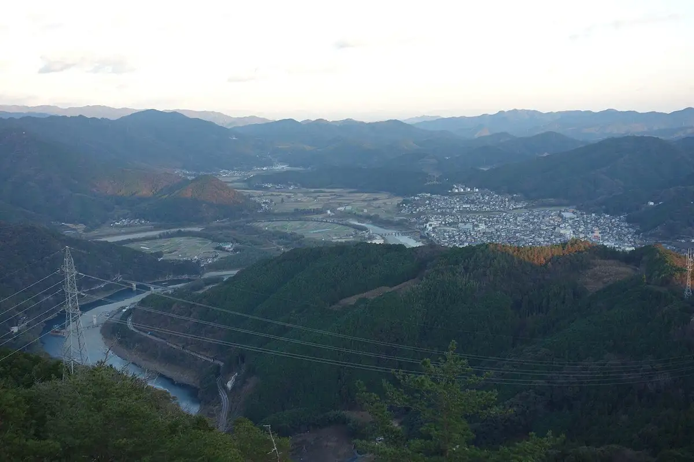
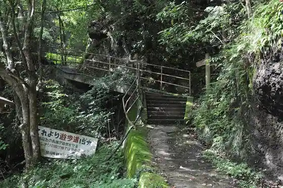

Ochi
Ochi · Kochi
Ochi
Highlighted on the Kochi map.

Stay
Su no Piiku Ochi Niyodogawa Kyanpufiirudo
Dining
Jiyu Ken Main Shop
Doraibuin Kataoka
Fukuro Inshokuten
Men Ya Kurahashi
Kyo Shoku Ya Kadota
Aji Raku
Senpachi
Hana
Kari Onna
Sights
Yokokura Yama
Ochi Town Hall
Naka Niyodo Hashi
Odaru Falls

Yokokura Yama Nature no Mori Museum
Heike no Miya
Antoku Tenno Jiju Noto Shu Noritsune Sekihi